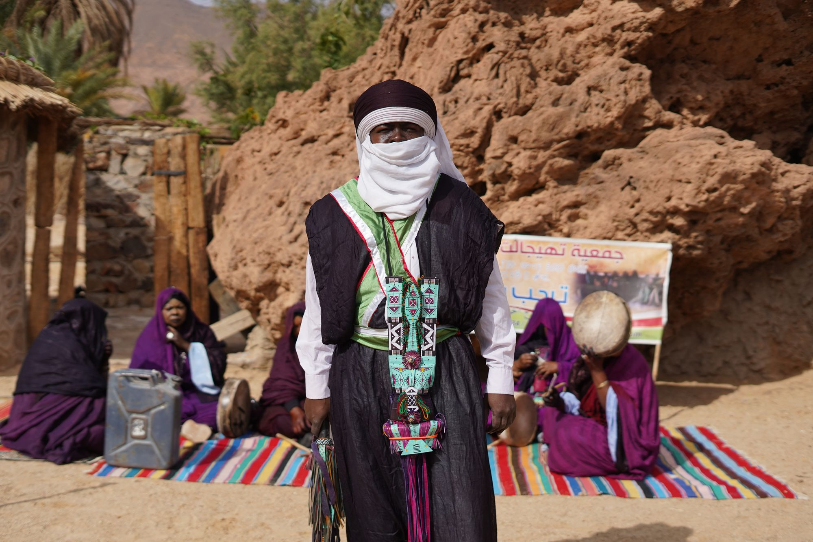
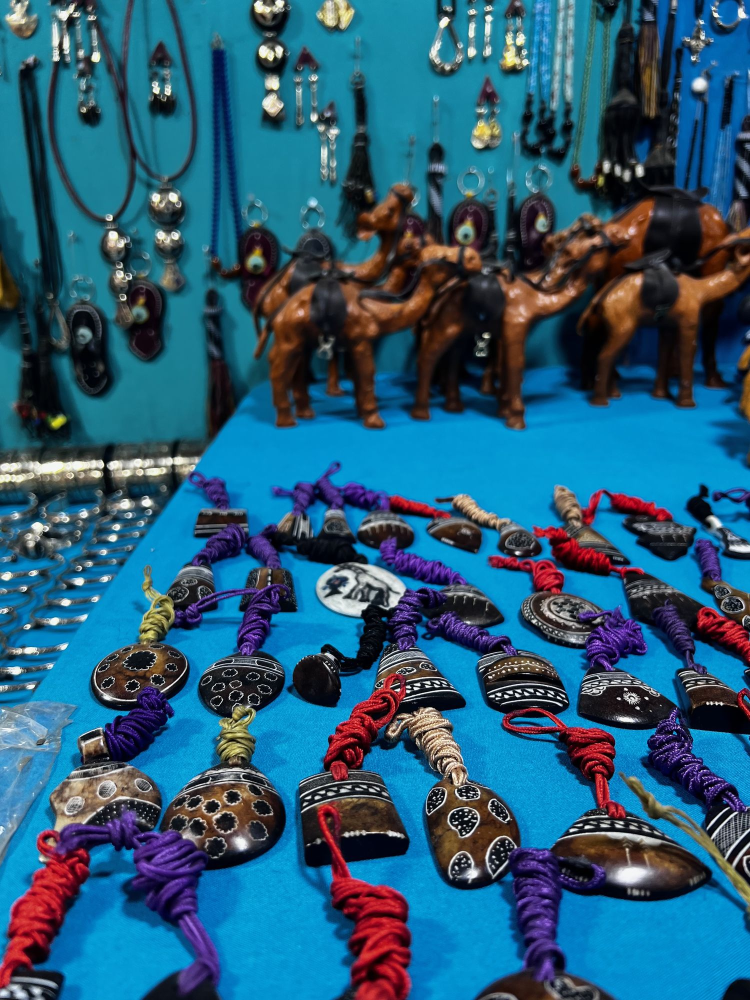

Culture touarègue
Les danses, l'artisanat et la cuisine de Djanet font partie du voyage. Voici ce que vous rencontrerez sur nos circuits.
Le folklore
Quatre formes de chant et de danse, que nos groupes présentent pendant les circuits.

Le groupe Tahamat
Un groupe traditionnel de 10 à 60 personnes selon l'importance de l'événement. Il se produit pour les célébrations de victoires, les mariages, les fêtes nationales et pendant les circuits touristiques.

Le groupe Alagh
Composé uniquement de jeunes hommes. Même tenue que le Tahamat (akhbay, chèche blanc et indigo), avec en plus la chemla, la ceinture croisée en X sur la poitrine. Il participe aux événements nationaux et aux foires internationales.

Le Tindi
Ici, les femmes sont au centre. Assises, elles donnent le rythme sur des jerricans métalliques utilisés comme percussions, pendant que l'une d'elles marque la cadence en frappant des mains.

L'Aliwen
Lié au lendemain du mariage. Les femmes, debout en demi-cercle, chantent des éloges au rythme des jerricans. Dans une autre version, des dromadaires évoluent autour d'elles et dansent au rythme des percussions.
L'artisanat
L'artisanat de Djanet est l'expression du génie nomade. Il travaille surtout le cuir, l'argent et les matériaux naturels.


La gastronomie
Ce que l'on mange et ce que l'on boit à Djanet et au bivouac.

La taguella
Le pain de sable, aliment de base des nomades : une galette de semoule cuite sous la cendre et le sable chaud, émiettée dans une sauce épicée riche en viande et en légumes.
Leftate
Une pâte très fine, émiettée et arrosée d'une sauce rouge à la viande, généreusement épicée et garnie de légumes.
Le méchoui saharien
Un mouton cuit à l'étouffée dans un trou creusé dans le sable, ce qui lui donne une saveur unique et une grande tendreté.
Le couscous
Servi avec une sauce rouge riche en viande et en légumes. Un plat de convivialité et de partage.
Le thé
Préparé selon un rituel précis, celui des trois verres. Il est le symbole de l'hospitalité et de la patience.
Igheli
Une boisson traditionnelle à base de dattes.
Votre voyage à Djanet commence par un message
Dites-nous vos dates et vos envies. Mina vous répond personnellement sous 24 heures.